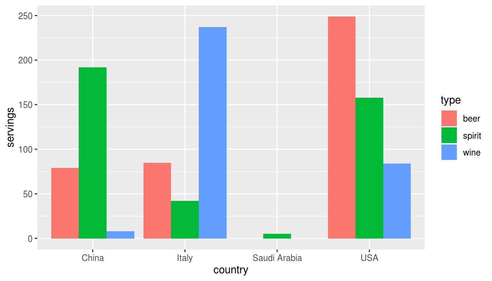

Chapter 5 Importing & Tidy Data
In Subsection 2.2.1 we introduced the concept of a data frame: a rectangular spreadsheet-like representation of data in R where the rows correspond to observations and the columns correspond to variables describing each observation. In Section 2.4, we started exploring our first data frame: the flights data frame included in the nycflights13 package. In Chapter 3 we created visualizations based on the data included in flights and other data frames such as weather. In Chapter 4, we learned how to wrangle data, in other words take existing data frames and transform and modify them to suit our desired analysis.
In this final chapter of the “Data Science via the tidyverse” portion of the book, we extend some of these ideas by discussing a type of data formatting called “tidy” data. You will see that having data stored in “tidy” format is about more than what the colloquial definition of the term “tidy” might suggest of having your data “neatly organized” in a spreadsheet. Instead, we define the term “tidy” in a more rigorous fashion, outlining a set of rules by which data can be stored and the implications of these rules for analyses.
Although knowledge of this type of data formatting was not necessary in our treatment of data visualization in Chapter 3 since all the data was already in tidy format, we’ll see going forward that having tidy data will allow you to more easily create data visualizations in a wide range of settings. Furthermore, it will also help you with data wrangling in Chapter 4 and in all subsequent chapters in this book when we cover regression and discuss statistical inference.
Needed packages
Let’s load all the packages needed for this chapter (this assumes you’ve already installed them). If needed, read Section 2.3 for information on how to install and load R packages.
library(dplyr)
library(ggplot2)
library(readr)
library(tidyr)
library(nycflights13)
library(fivethirtyeight)5.1 Importing data
Up to this point, we’ve almost entirely used data stored inside of an R package. Another common way to getting data into R is by importing from a spreadsheet file either on your computer or online. Spreadsheet data is often saved in one of two formats:
- A Comma Separated Values
.csvfile. You can think of a CSV file as a bare-bones spreadsheet where:- Each line in the file corresponds to one row of data/one observation.
- Values for each line are separated with commas. In other words, the values of different variables are separated by commas.
- The first line is often, but not always, a header row indicating the names of the columns/variables.
- An Excel
.xlsxfile. This format is based on Microsoft’s proprietary Excel software. As opposed to a bare-bones.csvfiles,.xlsxExcel files contain a lot of metadata, or put more simply, data about the data. Examples include the use of bold and italic fonts, colored cells, different column widths, and formula macros etc.
Google Sheets allows you to download your data in both comma separated values .csv and Excel .xlsx formats: Go to the Google Sheets menu bar -> File -> Download as -> Select “Microsoft Excel” or “Comma-separated values.”
We’ll cover two methods for importing data in R: one using the R console and the other using RStudio’s graphical interface.
5.1.1 Importing via the console
First, let’s import a Comma Separated Values (CSV) of data directly off the internet. The CSV file dem_score.csv accessible at https://moderndive.com/data/dem_score.csv contains ratings of the level of democracy in different countries spanning 1952 to 1992. Let’s use the read_csv() function from the readr package to read it off the web, import it into R, and save the data in a data frame called dem_score
library(readr)
dem_score <- read_csv("https://moderndive.com/data/dem_score.csv")
dem_score# A tibble: 96 x 10
country `1952` `1957` `1962` `1967` `1972` `1977` `1982` `1987` `1992`
<chr> <dbl> <dbl> <dbl> <dbl> <dbl> <dbl> <dbl> <dbl> <dbl>
1 Albania -9 -9 -9 -9 -9 -9 -9 -9 5
2 Argentina -9 -1 -1 -9 -9 -9 -8 8 7
3 Armenia -9 -7 -7 -7 -7 -7 -7 -7 7
4 Australia 10 10 10 10 10 10 10 10 10
5 Austria 10 10 10 10 10 10 10 10 10
6 Azerbaijan -9 -7 -7 -7 -7 -7 -7 -7 1
7 Belarus -9 -7 -7 -7 -7 -7 -7 -7 7
8 Belgium 10 10 10 10 10 10 10 10 10
9 Bhutan -10 -10 -10 -10 -10 -10 -10 -10 -10
10 Bolivia -4 -3 -3 -4 -7 -7 8 9 9
# … with 86 more rowsIn this dem_score data frame, the minimum value of -10 corresponds to a highly autocratic nation whereas a value of 10 corresponds to a highly democratic nation. We’ll revisit the dem_score data frame in a case study analysis in the upcoming Section 5.3.
Note that the read_csv() function included in the readr package is different than the read.csv() function that comes with R even if you don’t install any packages. While the different in the names might be near meaningless (an _ instead of a .), the read_csv() is in our opinions easier to use since it can easily read data off the web and generally imports data at a much faster speed.
5.1.2 Importing via RStudio’s interface
Let’s read in the exact same data saved in Excel format, but this time via RStudio’s graphical interface instead of via the R console. First download the Excel file dem_score.xlsx by clicking here, then
- Go to the Files panel of RStudio.
- Navigate to the directory where your downloaded
dem_score.xlsxis saved. - Click on
dem_score.xlsx - Click “Import Dataset…”
At this point you should see an image like this:

After clicking on the “Import” button on the bottom right RStudio save this spreadsheet’s data in a data frame called dem_score and display its contents in the spreadsheet viewer. Furthermore on the bottom right you’ll see the code that read in your data in the console; you can copy and paste this code to reload your data again later automatically instead of repeating the above manual process.
5.2 Tidy data
Let’s now switch gears and learn about the concept of “tidy” data format. Let’s start with a motivating example. Let’s consider the drinks data frame included in the fivethirtyeight data. Run the
drinks# A tibble: 193 x 5
country beer_servings spirit_servings wine_servings total_litres_of_pur…
<chr> <int> <int> <int> <dbl>
1 Afghanistan 0 0 0 0
2 Albania 89 132 54 4.9
3 Algeria 25 0 14 0.7
4 Andorra 245 138 312 12.4
5 Angola 217 57 45 5.9
6 Antigua & B… 102 128 45 4.9
7 Argentina 193 25 221 8.3
8 Armenia 21 179 11 3.8
9 Australia 261 72 212 10.4
10 Austria 279 75 191 9.7
# … with 183 more rowsAfter reading the help file by running ?drinks we see that is a data frame containing results from a survey of the average number of servings of beer, spirits, and wine consumed for 193 countries originally reported on the data journalism website FiveThirtyEight.com’s article “Dear Mona Followup: Where Do People Drink The Most Beer, Wine And Spirits?”.
Let’s filter drinks to only consider 4 countries: the US, China, Italy, and Saudi Arabia; drop the column total_litres_of_pure_alcohol by using select() with a - sign; and rename the variables beer_servings, spirit_servings, and wine_servings to read beer, spirit, and wine.
drinks_smaller <- drinks %>%
filter(country %in% c("USA", "China", "Italy", "Saudi Arabia")) %>%
select(-total_litres_of_pure_alcohol) %>%
rename(beer = beer_servings, spirit = spirit_servings, wine = wine_servings)
drinks_smaller# A tibble: 4 x 4
country beer spirit wine
<chr> <int> <int> <int>
1 China 79 192 8
2 Italy 85 42 237
3 Saudi Arabia 0 5 0
4 USA 249 158 84Using drinks_smaller, how would we create the side-by-side AKA dodged barplot in Figure 5.1; recall we saw barplots displaying two categorical variables in Section 3.8.3.
FIGURE 5.1: Alcohol consumption in 4 countries.
Let’s break down the Grammar of Graphics:
- The categorical variable
countrywith four levels (China, Italy, Saudi Arabia, USA) is mapped to thex-position of the bars. - The numerical variable
servingsis mapped to they-position of the bars, in other words the height. - The cateogircal variable
typewith three levels (beer, spirit, wine) is mapped to thefillcolor of the bars.
Observe however that drinks_smaller has three separate columns for beer, spirit, and wine, whereas in order to recreate the side-by-side AKA dodged barplot in Figure 5.1 we would need a single column type with three possible values: beer, spirit, and wine. In other words, for us to be able to create this barplot, our data frame would have to look like:
drinks_smaller_tidy# A tibble: 12 x 3
country type servings
<chr> <chr> <int>
1 China beer 79
2 Italy beer 85
3 Saudi Arabia beer 0
4 USA beer 249
5 China spirit 192
6 Italy spirit 42
7 Saudi Arabia spirit 5
8 USA spirit 158
9 China wine 8
10 Italy wine 237
11 Saudi Arabia wine 0
12 USA wine 84Observe that while drinks_smaller and drinks_smaller_tidy are both rectangular in shape and contain the same data on 4 countries average number of servings for 3 alcohol types, totalling 12 numerical values, they are formatted differently. drinks_smaller is formatted in what’s known as “wide” format, whereas drinks_smaller_tidy is formated in what’s known as “long/narrow”. “Long/narrow” format is as known in R circles as “tidy” format.
5.2.1 What is tidy data?
You have surely heard the word “tidy” in your life:
- “Tidy up your room!”
- “Please write your homework in a tidy way so that it is easier to grade and to provide feedback.”
- Marie Kondo’s best-selling book The Life-Changing Magic of Tidying Up: The Japanese Art of Decluttering and Organizing and Netflix TV series Tidying Up with Marie Kondo.
- “I am not by any stretch of the imagination a tidy person, and the piles of unread books on the coffee table and by my bed have a plaintive, pleading quality to me - ‘Read me, please!’” - Linda Grant
What does it mean for your data to be “tidy”? While “tidy” has a clear english meaning of “organized”, “tidy” in the context of data science using R means that your data follows a standardized format. We will follow Hadley Wickham’s definition of tidy data here (Wickham 2014):
A dataset is a collection of values, usually either numbers (if quantitative) or strings AKA text data (if qualitative). Values are organised in two ways. Every value belongs to a variable and an observation. A variable contains all values that measure the same underlying attribute (like height, temperature, duration) across units. An observation contains all values measured on the same unit (like a person, or a day, or a city) across attributes.
Tidy data is a standard way of mapping the meaning of a dataset to its structure. A dataset is messy or tidy depending on how rows, columns and tables are matched up with observations, variables and types. In tidy data:
- Each variable forms a column.
- Each observation forms a row.
- Each type of observational unit forms a table.

FIGURE 5.2: Tidy data graphic from http://r4ds.had.co.nz/tidy-data.html
For example, say the following table consists of stock prices:
| Date | Boeing Stock Price | Amazon Stock Price | Google Stock Price |
|---|---|---|---|
| 2009-01-01 | $173.55 | $174.90 | $174.34 |
| 2009-01-02 | $172.61 | $171.42 | $170.04 |
Although the data are neatly organized in a rectangular spreadsheet-type format, they are not in tidy format since there are three variables corresponding to three unique pieces of information (Date, Stock Name, and Stock Price), but there are not three columns. In tidy data format each variable should be its own column, as shown below. Notice that both tables present the same information, but in different formats.
| Date | Stock Name | Stock Price |
|---|---|---|
| 2009-01-01 | Boeing | $173.55 |
| 2009-01-02 | Boeing | $172.61 |
| 2009-01-01 | Amazon | $174.90 |
| 2009-01-02 | Amazon | $171.42 |
| 2009-01-01 | $174.34 | |
| 2009-01-02 | $170.04 |
However, consider the following table
| Date | Boeing Price | Weather |
|---|---|---|
| 2009-01-01 | $173.55 | Sunny |
| 2009-01-02 | $172.61 | Overcast |
In this case, even though the variable “Boeing Price” occurs again, the data is tidy since there are three variables corresponding to three unique pieces of information (Date, Boeing stock price, and the weather that particular day).
5.2.2 Converting to “tidy” format
In this book so far, you’ve only seen data frames that were already in “tidy” format. Furthermore for the rest of this book, you’ll only see data frames that are already in “tidy” format. This is not always the case however with data in the wild. If your original data is in wide AKA non-“tidy” format and you would like to use the ggplot2 or dplyr packages on it, you will have to convert it “tidy” format using the gather() function in the tidyr package (Wickham and Henry 2018). Going back to our drinks_smaller data frame
drinks_smaller# A tibble: 4 x 4
country beer spirit wine
<chr> <int> <int> <int>
1 China 79 192 8
2 Italy 85 42 237
3 Saudi Arabia 0 5 0
4 USA 249 158 84let’s convert it to “tidy” format by using the gather() function from the tidyr package:
drinks_smaller_tidy <- drinks_smaller %>%
gather(key = type, value = servings, -country)
drinks_smaller_tidy# A tibble: 12 x 3
country type servings
<chr> <chr> <int>
1 China beer 79
2 Italy beer 85
3 Saudi Arabia beer 0
4 USA beer 249
5 China spirit 192
6 Italy spirit 42
7 Saudi Arabia spirit 5
8 USA spirit 158
9 China wine 8
10 Italy wine 237
11 Saudi Arabia wine 0
12 USA wine 84We set the
keyargument to be the name of the column/variable in the new “tidy” frame that contains the column names of the original data frame that you want to gather. Observe we setkey = typeand in the resultingdrinks_smaller_tidydata frame, the columntypecontains the namesbeer,spirit, andserving.valueargument to be the name of the column/variable in the “tidy” frame that contains the rows and columns of values in the original data frame you want to gather. Observe we setvalue = servingsand in the resultingdrinks_smaller_tidydata frame, the columnvaluecontains the 4 \(\times\) 3 numerical values.- Third argument to be the columns you want to or don’t want to gather. Observe we set this to
-countryindicating that we don’t want to gather thecountryvariable and in the resultingdrinks_smaller_tidydata frame there is still a variablecountry.
With the resulting drinks_smaller_tidy “tidy” format data frame, we can now produce a side-by-side AKA dodged barplot using geom_col() and not geom_bar(), since we would like to map the servings variable to the y-aesthetic of the bars.
ggplot(drinks_smaller_tidy, aes(x=country, y=servings, fill=type)) +
geom_col(position = "dodge")
Converting “wide” format data to “tidy” format often confuses new R users. The only way to learn to get comfortable with the gather() function is with practice, practice, and more practice. For example, see the examples in the bottom of the help file for gather() by running ?gather. We’ll show another example of using gather() to convert a “wide” formatted data frame to “tidy” format in Section 5.3. For other examples of converting a dataset into “tidy” format, check out the different functions available for data tidying and a case study using data from the World Health Organization in R for Data Science (Grolemund and Wickham 2016).
Learning check
(LC5.1) Consider the following data frame of average number of servings of beer, spirits, and wine consumption in three countries as reported in the FiveThirtyEight article Dear Mona Followup: Where Do People Drink The Most Beer, Wine And Spirits?
# A tibble: 3 x 4
country beer_servings spirit_servings wine_servings
<chr> <int> <int> <int>
1 Canada 240 122 100
2 South Korea 140 16 9
3 USA 249 158 84This data frame is not in tidy format. What would it look like if it were?
5.2.3 nycflights13 package
Recall the nycflights13 package with data about all domestic flights departing from New York City in 2013 that we introduced in Section 2.4 and used extensively in Chapter 3 to create visualizations. In particular, let’s revisit the flights data frame by running View(flights) in your console. We see that flights has a rectangular shape with each row corresponding to a different flight and each column corresponding to a characteristic of that flight. This matches exactly with how Hadley Wickham defined tidy data:
- Each variable forms a column.
- Each observation forms a row.
But what about the third property of “tidy” data?
- Each type of observational unit forms a table.
Observational units:
We identified earlier that the observational unit in the flights dataset is an individual flight. And we have shown that this dataset consists of 336,776 flights with 22 variables. In other words, rows of this dataset don’t refer to a measurement on an airline or on an airport; they refer to characteristics/measurements on a given flight from New York City in 2013.
Also included in the nycflights13 package are datasets with different observational units (Wickham 2018):
airlines: translation between two letter IATA carrier codes and names (16 in total)planes: construction information about each of 3,322 planes usedweather: hourly meteorological data (about 8705 observations) for each of the three NYC airportsairports: airport names and locations
The organization of this data follows the third “tidy” data property: observations corresponding to the same observational unit should be saved in the same table/data frame. Another example involves a spreadsheet of all students enrolled in a university along with information about them, such as name, gender, and date of birth. Each row represents an individual student, which is the observational unit in question.
Identification vs measurement variables:
There is a subtle difference between the kinds of variables that you will encounter in data frames: measurement variables and identification variables. The airports data frame you worked with above contains both these types of variables. Recall that in airports the observational unit is an airport, and thus each row corresponds to one particular airport. Let’s pull them apart using the glimpse function:
glimpse(airports)Observations: 1,458
Variables: 8
$ faa <chr> "04G", "06A", "06C", "06N", "09J", "0A9", "0G6", "0G7", "0P2", …
$ name <chr> "Lansdowne Airport", "Moton Field Municipal Airport", "Schaumbu…
$ lat <dbl> 41.1, 32.5, 42.0, 41.4, 31.1, 36.4, 41.5, 42.9, 39.8, 48.1, 39.…
$ lon <dbl> -80.6, -85.7, -88.1, -74.4, -81.4, -82.2, -84.5, -76.8, -76.6, …
$ alt <int> 1044, 264, 801, 523, 11, 1593, 730, 492, 1000, 108, 409, 875, 1…
$ tz <dbl> -5, -6, -6, -5, -5, -5, -5, -5, -5, -8, -5, -6, -5, -5, -5, -5,…
$ dst <chr> "A", "A", "A", "A", "A", "A", "A", "A", "U", "A", "A", "U", "A"…
$ tzone <chr> "America/New_York", "America/Chicago", "America/Chicago", "Amer…The variables faa and name are what we will call identification variables: variables that uniquely identify each observational unit. They are mainly used to provide a unique name to each observational unit, thereby allowing us to uniquely identify them. faa gives the unique code provided by the FAA for that airport, while the name variable gives the longer more natural name of the airport. The remaining variables (lat, lon, alt, tz, dst, tzone) are often called measurement or characteristic variables: variables that describe properties of each observational unit, in other words each observation in each row. For example, lat and long describe the latitude and longitude of each airport.
So in our above example of a spreadsheet of all students enrolled at a university, email address could be treated as an identical variable since it uniquely identifies each observational unit i.e. each student, while date of birth could not since it is possible (and highly probable) that two students share the same birthday.
Furthermore, sometimes a single variable might not be enough to uniquely identify each observational unit: combinations of variables might be needed (see Learning Check below). While it is not an absolute rule, for organizational purposes it is considered good practice to have your identification variables in the far left-most columns of your data frame.
Learning check
(LC5.2) What properties of the observational unit do each of lat, lon, alt, tz, dst, and tzone describe for the airports data frame? Note that you may want to use ?airports to get more information.
(LC5.3) Provide the names of variables in a data frame with at least three variables in which one of them is an identification variable and the other two are not. In other words, create your own tidy dataset that matches these conditions.
5.3 Case study: Democracy in Guatemala
In this section, we’ll show you another example of how to convert a dataset that isn’t in “tidy” format i.e. “wide” format, to a dataset that is in “tidy” format i.e. “long/narrow” format using the gather() function from the tidyr package.. Let’s use the dem_score data frame we imported in Section 5.1, but focus on only data corresponding to the country of Guatemala.
guat_dem <- dem_score %>%
filter(country == "Guatemala")
guat_dem# A tibble: 1 x 10
country `1952` `1957` `1962` `1967` `1972` `1977` `1982` `1987` `1992`
<chr> <dbl> <dbl> <dbl> <dbl> <dbl> <dbl> <dbl> <dbl> <dbl>
1 Guatemala 2 -6 -5 3 1 -3 -7 3 3Now let’s produce a plot showing how the democracy scores have changed over the 40 years from 1952 to 1992 for Guatemala. Let’s start by laying out how we would map our aesthetics to variables in the data frame:
- The
dataframe isguat_demby settingdata = guat_dem
What are the names of the variables to plot? We’d like to see how the democracy score has changed over the years. Now we are stuck in a predicament. We see that we have a variable named country but its only value is "Guatemala". We have other variables denoted by different year values. Unfortunately, we’ve run into a dataset that is not in the appropriate format to apply the Grammar of Graphics and ggplot2. Remember that ggplot2 is a package in the tidyverse and, thus, needs data to be in a tidy format. We’d like to finish off our mapping of aesthetics to variables by doing something like
- The
aesthetic mapping is set byaes(x = year, y = democracy_score)
but this is not possible with our wide-formatted data. We need to take the values of the current column names in guat_dem (aside from country) and convert them into a new variable that will act as a key called year. Then, we’d like to take the numbers on the inside of the table and turn them into a column that will act as values called democracy_score. Our resulting data frame will have three columns: country, year, and democracy_score.
The gather() function in the tidyr package can complete this task for us. The first argument to gather(), just as with ggplot2(), is the data argument where we specify which data frame we would like to tidy. The next two arguments to gather() are key and value, which specify what we’d like to call the new columns that convert our wide data into long format. Lastly, we include a specification for variables we’d like to NOT include in this tidying process using a -.
guat_tidy <- guat_dem %>%
gather(key = year, value = democracy_score, -country)
guat_tidy# A tibble: 9 x 3
country year democracy_score
<chr> <chr> <dbl>
1 Guatemala 1952 2
2 Guatemala 1957 -6
3 Guatemala 1962 -5
4 Guatemala 1967 3
5 Guatemala 1972 1
6 Guatemala 1977 -3
7 Guatemala 1982 -7
8 Guatemala 1987 3
9 Guatemala 1992 3We can now create the plot to show how the democracy score of Guatemala changed from 1952 to 1992 using a linegraph and ggplot2.
ggplot(guat_tidy, aes(x = year, y = democracy_score)) +
geom_line()geom_path: Each group consists of only one observation. Do you need to adjust
the group aesthetic?
Observe that the year variable in guat_tidy is stored as a character vector since we had to circumvent the naming rules in R by adding backticks around the different year columns in guat_dem. This is leading to ggplot not knowing exactly how to plot a line using a categorical variable. We can fix this by using the parse_number() function in the readr package and then specify the horizontal axis label to be "year":
ggplot(guat_tidy, aes(x = parse_number(year), y = democracy_score)) +
geom_line() +
labs(x = "year")FIGURE 5.3: Guatemala’s democracy score ratings from 1952 to 1992
We’ll see in Chapter 4 how we could use the mutate() function to change year to be a numeric variable instead after we have done our tidying. Notice now that the mappings of aesthetics to variables make sense in Figure 5.3:
- The
dataframe isguat_tidyby settingdata = dem_score - The
xaesthetic is mapped toyear - The
yaesthetic is mapped todemocracy_score - The
geom_etry chosen isline
Learning check
(LC5.4) Convert the dem_score data frame into a tidy data frame and assign the name of dem_score_tidy to the resulting long-formatted data frame.
(LC5.5) Read in the life expectancy data stored at https://moderndive.com/data/le_mess.csv and convert it to a tidy data frame.
5.4 Conclusion
5.4.1 tidyverse package
Notice at the beginning of the Chapter we loaded the following four packages:
library(dplyr)
library(ggplot2)
library(readr)
library(tidyr)In fact, these are among the four of the most frequently used R packages for data science. There is a much quicker way to load these packages than by individually loading them as we did above. We can install and load the tidyverse package. The tidyverse package acts as an “umbrella” package whereby installing/loading it will install/load multiple packages at once for you. So that after installing the tidyverse package as you would a normal package, running this:
library(tidyverse)would be the same as running this:
library(ggplot2)
library(dplyr)
library(tidyr)
library(readr)
library(purrr)
library(tibble)
library(stringr)
library(forcats)You’ve seen the first 4 of the these packages: ggplot2 for data visualization, dplyr for data wrangling, tidyr for converting data to “tidy” format, and readr for importing spreadsheet data into R. The remaining packages (purrr, tibble, stringr, and forcats) are left for a more advanced book; check out R for Data Science to learn about these packages.
The tidyverse “umbrella” package gets its name from the fact that all functions in all its constituent packages are designed to that all inputs/argument data frames are in “tidy” format and all output data frames are in “tidy” format as well. This acts as a standardization to make transitions between the various functions in these packages as seamless as possible.
5.4.2 Optional: Normal forms of data
The datasets included in the nycflights13 package are in a form that minimizes redundancy of data. We will see that there are ways to merge (or join) the different tables together easily. We are capable of doing so because each of the tables have keys in common to relate one to another. This is an important property of normal forms of data. The process of decomposing data frames into less redundant tables without losing information is called normalization. More information is available on Wikipedia.
We saw an example of this above with the airlines dataset. While the flights data frame could also include a column with the names of the airlines instead of the carrier code, this would be repetitive since there is a unique mapping of the carrier code to the name of the airline/carrier.
Below an example is given showing how to join the airlines data frame together with the flights data frame by linking together the two datasets via a common key of "carrier". Note that this “joined” data frame is assigned to a new data frame called joined_flights. The key variable that we frequently join by is one of the identification variables mentioned above.
joined_flights <- inner_join(x = flights, y = airlines, by = "carrier")View(joined_flights)If we View() this dataset, we see a new variable has been created called name. (We will see in Subsection 4.8.2 ways to change name to a more descriptive variable name.) More discussion about joining data frames together will be given in Chapter 4. We will see there that the names of the columns to be linked need not match as they did here with "carrier".
Learning check
(LC5.6) What are common characteristics of “tidy” datasets?
(LC5.7) What makes “tidy” datasets useful for organizing data?
(LC5.8) What are some advantages of data in normal forms? What are some disadvantages?
5.4.3 Additional resources
An R script file of all R code used in this chapter is available here.
If you want to learn more about using the readr and tidyr package, we suggest you that you check out RStudio’s “Data Import” cheatsheet. You can access this cheatsheet by going to RStudio’s cheatsheet page and searching for “Data Import Cheat Sheet”.

FIGURE 5.4: Data Import cheatsheat
5.4.4 What’s to come?
Congratulations! We’ve completed the “Data Science via the tidyverse” portion of this book! We’ll now move to the “data modeling” portion in Chapters 6 and 7, where you’ll leverage your data visualization and wrangling skills to model relationships between different variables in datasets. However, we’re going to leave the Chapter 11 on “Inference for Regression” until after we’ve covered statistical inference.

FIGURE 5.5: ModernDive flowchart - On to Part II!
References
Grolemund, Garrett, and Hadley Wickham. 2016. R for Data Science. http://r4ds.had.co.nz/.
Wickham, Hadley. 2014. “Tidy Data.” Journal of Statistical Software Volume 59 (Issue 10). https://www.jstatsoft.org/index.php/jss/article/view/v059i10/v59i10.pdf.
Wickham, Hadley. 2018. Nycflights13: Flights That Departed Nyc in 2013. https://CRAN.R-project.org/package=nycflights13.
Wickham, Hadley, and Lionel Henry. 2018. Tidyr: Easily Tidy Data with ’Spread()’ and ’Gather()’ Functions. https://CRAN.R-project.org/package=tidyr.